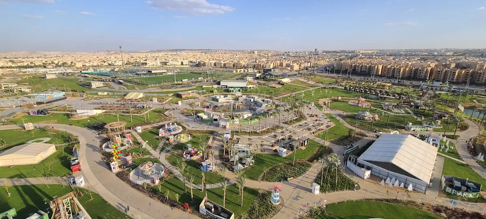

Affaires Familiales – Tribunal de Sheikh Zayed
Divorce, khul', pension, garde, visite, filiation devant le Tribunal de la Famille de Sheikh Zayed.
DétailsService juridique premium pour les résidents de Sheikh Zayed Nouvelle & Ancienne – Tribunal de la Famille & Parquet de Sheikh Zayed
Le Cabinet Al-Ghonemy sert les résidents de Sheikh Zayed Nouvelle & Ancienne depuis son siège au Centre Al Hejaz – Place Al-Hosary – 6 Octobre (à quelques minutes de Sheikh Zayed). Nous comparaissons quotidiennement devant le Tribunal de la Famille de Sheikh Zayed et le Parquet de Sheikh Zayed.

Nous fournissons tous les services juridiques avec représentation devant le Tribunal de la Famille de Sheikh Zayed et le Parquet de Sheikh Zayed
Divorce, khul', pension, garde, visite, filiation devant le Tribunal de la Famille de Sheikh Zayed.
DétailsReprésentation devant le Parquet de Sheikh Zayed, enquêtes, contraventions, crimes, défense forte.
DétailsNotification d'héritiers, partage charaïque, correction, litiges de succession devant le Tribunal de la Famille.
DétailsNotarisation de contrats, registre foncier, litiges de propriété, contrats de vente & location à Sheikh Zayed & 6 Octobre.
DétailsCréation d'entreprises, contrats commerciaux, partenariats, litiges commerciaux pour les résidents de Sheikh Zayed.
DétailsContrats de vente, location, partenariat, travail, révision juridique pour Sheikh Zayed.
DétailsChantage électronique, diffamation, menaces, piratage, protection des données, Loi anti-cybercriminalité.
Consultation RapideLicenciement abusif, droits, indemnisation accidents, blessures de travail pour les résidents de Sheikh Zayed.
Consultation RapideIndemnisation accidents de route, blessures de travail, dommages matériels & moraux, responsabilité professionnelle.
Consultation Rapideمكتبنا يخدم جميع سكان الشيخ زايد الجديدة والقديمة والمناطق المجاورة
Nous comparaissons quotidiennement devant le Tribunal de la Famille de Sheikh Zayed et le Parquet de Sheikh Zayed
Toutes les affaires de statut personnel : divorce, khul', pension, garde, visite, filiation
Enquêtes pénales, contraventions, crimes, infractions, rapports
Proche de Sheikh Zayed, nous comparaissons pour les résidents des zones frontalières
Enquêtes pénales complexes, crimes, appels, représentation forte
Appels contre les jugements des tribunaux du 6 Octobre & Sheikh Zayed
Pourvois en cassation, 19+ ans d'expérience
Réponses rapides aux questions les plus fréquentes des résidents de Sheikh Zayed
Notre bureau principal est au 6 Octobre – Centre Al Hejaz – Place Al-Hosary, à seulement quelques minutes de Sheikh Zayed. Nous servons tout Sheikh Zayed depuis le bureau du 6 Octobre et comparaissons quotidiennement devant le Tribunal de la Famille de Sheikh Zayed et le Parquet de Sheikh Zayed.
Nous servons tous les quartiers de Sheikh Zayed : Nouvelle Ville, Ancienne Ville, Quartiers 1-4, Al Bashaer, Al Yasmine, Cairo Gate, Al Rabwa.
Oui quotidiennement. Nos avocats comparaissent devant le Tribunal de la Famille de Sheikh Zayed quotidiennement dans toutes les affaires de statut personnel : Divorce, Khul', Pension, Garde, Visite.
Oui. Nous comparaissons devant le Parquet de Sheikh Zayed dans toutes les affaires pénales : Enquêtes, Contraventions, Crimes, Infractions.
Contactez via WhatsApp 01126118276 (instantané 24/7), téléphone 01003651199 (tous les jours 17-22h), ou notre bureau du 6 Octobre.
Oui. Nous fournissons des consultations juridiques complètes en ligne via Zoom, WhatsApp, téléphone. Pas besoin de visiter le bureau.
Oui absolument. Nous servons tous les compounds de Sheikh Zayed : Al Bashaer, Al Yasmine, Cairo Gate, Al Rabwa et tous les compounds de Sheikh Zayed nouvelle/ancienne.
Oui spécialisé. Al-Ghonemy se spécialise dans les successions & héritages devant le Tribunal de la Famille de Sheikh Zayed : Notification d'héritiers, Partage charaïque.
À quelques minutes de Sheikh Zayed – Tribunal de la Famille de Sheikh Zayed, Parquet de Sheikh Zayed – Avocats spécialisés, 19+ ans d'expérience
01003651199 | 01126118276 | مكتب 6 أكتوبر: مول الحجاز - ميدان الحصري (دقائق من الشيخ زايد)